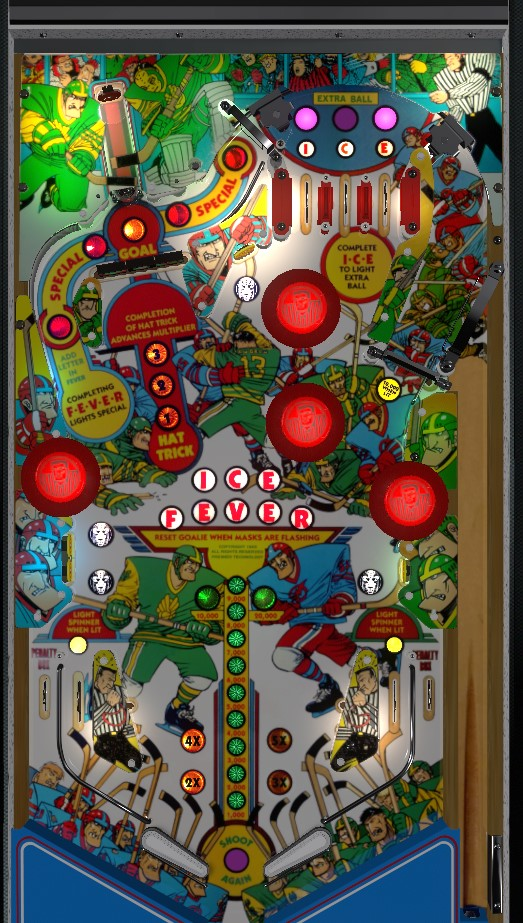

Scoring on Ice Fever is dominated by the value of a lit right spinner. Lit in lanes light the spinner, and unlit in lanes unlight the spinner. The spinner is worth 10,000 points per spin when lit, which is entirely too much. Make a lit in lane- by shatzing/alley passing if you can- then always be transferring the ball to the left flipper and shooting the spinner. Nothing else in the game, including bonus multipliers or specials/extra balls, is worthwhile.
Lit lanes score 5,000 points. Unlit lanes score 1,000 points. Lanes score 1 bonus advance whether lit or not. Roll through a lit lane to unlight it. There is NO lane change available for rotating which top lanes are lit, so nudging is required to influence what you get. Collecting all three letters in Ice lights one of the three lanes purple for extra ball. Which lane is lit purple rotates every time a bumper, slingshot, or spinner switch is registered. Making the purple lane scores 50,000 points or an extra ball depending on game settings, and resets the Ice lanes. Unlike a significant number of pinball games, the top lanes have no impact on bonus multiplier.
(If the game is set to 5 ball play instead of 3 balls, completing Ice will light two lanes purple. Both purple lanes must be made to score the extra ball in this case.)
The three drop targets in the upper left of the game block off a direct shot at the captive ball. Each target down in this bank scores 5,000 points. Clear drop targets to be able to hit the captive ball. A full hit to the captive ball that registers the target at the end of the lane scores 50,000 points and one Goal. Making three Goals (a hat-trick) increases the bonus multiplier by one, up to its maximum of 5x. It is generally possible to backhand the drop targets, but not the captive ball.
There are 4 goalie standup targets around the game: two in the lower left, one in the lower right, and one in the top middle. Whether lit, unlit, or flashing, these targets score 1,000 points and a bonus advance. Each drop target knocked down will light one of the goalie standup targets. Bumpers and slingshots rotate which goalie standup(s) are lit. Hitting a lit goalie standup target will cause all lit goalie standup(s) to flash. Hitting a flashing goalie standup target will unlight all goalie standups and reset the drop targets in front of the captive ball. Thus, the strategy for getting Goals and bonus multipliers is clear the drop targets once, then avoid the standup targets at all costs to make sure the drop targets stay down.
Shots to the left orbit score 5,000 points and a Fever letter if they trigger the roll-under switch at the top of the game just before the one way gate that funnels the ball toward the Ice lanes. Making this shot 5 times to spell Fever will light the sixth shot to this orbit for an instant Special.
The right spinner is another way to return the ball to the top of the playfield. The spinner scores 1,000 points per spin when not lit, or 10,000 per spin when lit. Rolling through a lit in lane lights the spinner. Rolling through an unlit in lane will turn the spinner off. An unlit spinner at 1,000 per spin would be decent enough value on its own, but a lit spinner at 10,000 per spin is overpowering. Score a lit in lane at any cost and then, without triggering an unlit in lane where possible, hit the right spinner repeatedly. Not even repeatedly scoring goals can compare as a strategy for points. Lit in lanes alternate with bumper and slingshot hits.
Ice Fever has a conventional in/out lane setup. In lanes score 1,000 points and a bonus advance, and are lit alternately to activate or deactivate the spinner. Out lanes score 10,000 points and a bonus advance.
Bonus is advanced by any rollover lane or standup target. Bonus multiplier requires scoring a hat trick by making 3 full shots to the captive ball. Max bonus is 5x 29,000 = 145,000 points. Bonus multiplier is always carried from ball to ball, but base bonus never is. There is no mid-ball bonus collect.
In competition/novelty play, extra balls and specials score 50,000 points. This is accompanied by 5 hits to the replay knocker, so do not be alarmed.

All copyrighted names and terms in this document belong to their respective owners. The information provided in this document is for educational purposes only and no infringement is intended.
Back to top To game list To main page